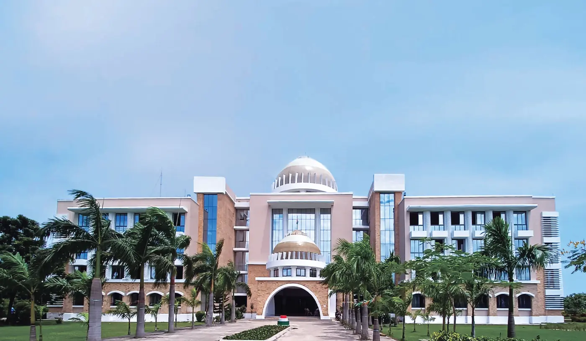

Engineering ki padhai, Bihar mein hi.
B.Tech Admission 2026 at Sandip University, Madhubani.
- Duration4 Years
- Eligibility10+2 with PCM
- Branches5
- Campus125+ acres
- UGC recognised
- NAAC B++ accredited
Why Sandip
A private engineering college in Bihar, built so a student from Madhubani, Darbhanga or Supaul does not have to leave the state to study engineering. Everything a B.Tech aspirant needs sits on one residential campus.
-
Faculty with IIT and NIT experience
The objection every family in Madhubani raises is whether studying in Bihar means being taught by people who could not teach elsewhere. It does not. The teaching staff includes faculty who have worked at IITs and NITs.
-
Bihar Student Credit Card accepted
The state education loan of [[CONFIRM: BSCC maximum loan amount]] at [[CONFIRM: BSCC interest rate]] can be used here. Our admission cell prepares the DRCC file with your family, so nobody has to work out the paperwork alone.
-
A residential campus of 125+ acres
Separate boys’ and girls’ hostels with resident wardens, mess, 24×7 security and power backup. An engineering college with hostel matters when home is four districts away.
-
An EV Lab, not a generic workshop
Students strip and rebuild complete electric vehicles: battery packs, motor controllers, the full wire harness. It is the kind of work a graduate can describe in an interview, which a lecture-only course never produces.
Programmes
Five four-year branches across two schools. The fee and the entry mark are not the same for both schools, so each row states its own.
Eligibility
45% in 10+2 and 45% in PCM. Four years, eight semesters.
Lateral entry: a 3-year Diploma with at least 50% takes you straight into the second year, at the same fee as the first.
What you study
Structural analysis and design, construction technology, surveying, transportation, geotechnical and environmental engineering, with AutoCAD and STAAD Pro in the laboratory.
Where it leads
Site Engineer, Structural Designer, Project Engineer. Of the five, this civil engineering college route has the widest government intake: SSC JE, State JE and AE examinations, Railways, PWD and NHAI.
Eligibility
45% in 10+2 and 45% in PCM. Four years, eight semesters.
Lateral entry: a 3-year Diploma with at least 50% takes you straight into the second year, at the same fee as the first.
What you study
Power systems, electrical machines, control systems and power electronics, alongside the EV Lab, where students build battery packs and wire complete vehicle harnesses.
Where it leads
Electrical Engineer, Automation Engineer, Testing Engineer, with state DISCOMs, Railways, NTPC and PGCIL as the usual government routes.
Eligibility
45% in 10+2 and 45% in PCM. Four years, eight semesters.
Lateral entry: a 3-year Diploma with at least 50% takes you straight into the second year, at the same fee as the first.
What you study
Thermodynamics, machine design, manufacturing processes, fluid mechanics and CAD/CAM, taught alongside workshop practice rather than after it.
Where it leads
Design Engineer, Production Engineer, Maintenance Engineer. This mechanical engineering college route leads to SSC JE, Railways, NTPC, BHEL and IOCL.
Eligibility
50% in 10+2 and 45% in PCM. Four years, eight semesters.
Lateral entry: a 3-year Diploma with at least 50% takes you straight into the second year, at the same fee as the first.
What you study
The full computer science engineering core: programming, data structures and algorithms, database systems, operating systems, computer networks, and web and software engineering.
Where it leads
Software Engineer, Application Developer, Systems Analyst, QA Engineer. Also the strongest of the five for GATE and postgraduate study.
CSE or CSE with AI & ML?
This is the general computer science degree. It covers everything the AI & ML branch covers in the first two years, and then goes wider rather than deeper: more systems, more networks, more software engineering.
Eligibility
50% in 10+2 and 45% in PCM. Four years, eight semesters.
Lateral entry: a 3-year Diploma with at least 50% takes you straight into the second year, at the same fee as the first.
What you study
The same computer science core, then a specialisation stream: Python for data work, machine learning algorithms, neural networks and deep learning, natural language processing, computer vision and data analytics.
Where it leads
Machine Learning Engineer, Data Analyst, AI Developer, as well as every role open to the general CSE branch.
CSE or CSE with AI & ML?
The ₹20,000 a year buys the specialisation stream, not a different degree. If you enjoy mathematics and statistics and want to be hiring-ready for AI work specifically, take it. If you are not sure yet, the general CSE branch keeps more doors open and costs less.
Placement assistance that starts in year one
Aptitude and communication work begins in the first year, not the final one, and runs through resume workshops, mock interviews and campus drives. The university states 100% placement assistance, which is support for every eligible student and not a guarantee of a job.
-
12 LPA
Mayashankar Kumar
B.Tech
Bharat Dynamics Limited
-
7 LPA
Vidyanand Prakash
B.Tech Civil
MGH Infra
-
3 LPA
Vikas Kumar
B.Tech Electrical
TEXMACO Rail & Engineering
Named students from the university’s published placement record. See the full list
[[CONFIRM: Mechanical placement records]]
Firms that have hired B.Tech students from this campus
- TEXMACO Rail & Engineering
- MGH Infra
- Bharat Dynamics Limited
- HCL
- Codebucket Solutions
University-wide recruiters, across all programmes
- Asian Paints
- Cognizant
- TCS
- Godrej
- GeBBS
- Atos
- Mahindra
- Infosys
- Amazon
Fees, scholarship and the Student Credit Card
Tuition is only part of what a family pays in the first year. Everything the university charges is set out below, then the two routes that reduce it.
Annual tuition, by branch
| Branch | Per year |
|---|---|
| B.Tech (Civil Engineering) | ₹90,000 |
| B.Tech (Electrical Engineering) | ₹90,000 |
| B.Tech (Mechanical Engineering) | ₹90,000 |
| B.Tech (Computer Science and Engineering) | ₹1,05,000 |
| B.Tech (Computer Science and Engineering with AI & ML) | ₹1,25,000 |
Lateral entry into the second year is charged at the same rate as the first. The university’s own Polytechnic runs at ₹78,000 a year.
What the first year actually costs
Tuition plus every one-time charge below. Indicative, and before any scholarship or Student Credit Card is applied.
| Branch tier | Day scholar | With hostel |
|---|---|---|
| Civil, Electrical, Mechanical | ₹1,01,500 | ₹1,81,500 |
| Computer Science and Engineering | ₹1,16,500 | ₹1,96,500 |
| CSE with AI & ML | ₹1,36,500 | ₹2,16,500 |
Day scholar adds forms, registration, uniform and caution money to tuition. With hostel adds a year’s hostel charge and the hostel security deposit. Caution money is refundable. Convocation is charged in the final year, not the first, so it is not counted here.
What else you pay
| Item | Amount | When |
|---|---|---|
| Forms and prospectus | ₹500 | One time |
| Registration fee | ₹2,500 | One time |
| Uniform | ₹5,500 | At admission |
| Hostel | ₹75,000 | Per year |
| Hostel security deposit | ₹5,000 | One time |
| B1 hostel supplement | ₹10,000 | Per year, subject to availability |
| University caution money | ₹3,000 | Refundable |
| Convocation and certificate | ₹3,000 | Final year |
The Bihar Student Credit Card
Sandip University accepts the Bihar Student Credit Card, the state government’s education loan for students who have passed 10+2 and hold Bihar domicile. It is the route most families here use, and it is the reason the engineering college with student credit card search exists at all.
The loan is applied for through the state, not through the university. You register online on the Bihar government portal, and then attend your DRCC in person within 60 days to complete verification. Our admission cell prepares the file with your family so nobody works it out alone.
Approval, the sanctioned amount and disbursement are decided by the Government of Bihar. The university cannot promise any of the three.
- Maximum loan
- [[CONFIRM: BSCC maximum loan amount]]
- Interest
- [[CONFIRM: BSCC interest rate]]
- Concessional rate
- [[CONFIRM: BSCC concessional rate]]
- Collateral
- [[CONFIRM: BSCC collateral requirement]]
- Age limit
- [[CONFIRM: BSCC age limit]]
- Documents
- [[CONFIRM: BSCC document checklist]]
Scholarships
Merit, on your 10+2 marks
A tuition waiver is awarded on a sliding scale against your qualifying marks. The band you fall into is confirmed in writing after your documents are verified, before any payment is made.
- [[CONFIRM: scholarship slab 1 marks]]
- [[CONFIRM: scholarship slab 1 waiver]]
- [[CONFIRM: scholarship slab 2 marks]]
- [[CONFIRM: scholarship slab 2 waiver]]
- [[CONFIRM: scholarship slab 3 marks]]
- [[CONFIRM: scholarship slab 3 waiver]]
SU-JEE, the entrance and scholarship test
The university runs its own entrance examination, SU-JEE, which doubles as the scholarship test. A share of each intake is reserved for students admitted on merit through it, and awards are finalised after the result is declared. Sitting SU-JEE is not required for admission, but it is the only route to the merit-reserved seats.
Sports
A separate sports quota scholarship runs alongside the merit scheme, at a fixed share of intake.
The campus
Hostels, canteens, classrooms, gymnasium, library, round-the-clock security and an on-campus ambulance, on 125+ acres at Sijoul.
-

Main academic block -

Academic building -

Hostel block -
[[CONFIRM: hostel room, mess and common room photos]]
The interior shots on file are 340px thumbnails, and the one labelled as a room is a shared washroom. Where a student will actually live is the question families ask straight after fees, so it should not be guessed at.
-

EV Lab, hub motor stripped down -

EV Lab, wire harness and controller -

EV Lab, vehicle chassis -
[[CONFIRM: Civil lab or workshop photo]]
Civil is one of the two largest placement cohorts on this campus and has no image here. The EV Lab speaks for Electrical and Mechanical; nothing yet speaks for Civil.
-

Classroom
How admission works
Four steps, in order. Diploma holders applying for direct second year follow the same four; where anything differs it is noted in the step.
-
Apply online, or call
Use the form at the foot of this page, or apply on the university’s admission portal directly. The portal asks for your name, Aadhaar, email and mobile, and verifies the number by OTP.
-
Submit documents, confirm eligibility
Upload your 10th and 12th marksheets and certificates. The entry mark differs by school, so eligibility is checked against the branch you have applied for.
Applying for direct second year: submit your 3-year diploma marksheet at this step instead of the 12th certificate.
-
Counselling and branch allotment
A counsellor goes through the branches, what each costs, and where you stand on the Student Credit Card. Admission is offered on your 10+2 marks. If you hold a JEE Main score you may put it forward and it will be considered, but it is not asked for and not sitting the exam does not count against you.
[[CONFIRM: is SU-JEE required for B.Tech admission, or scholarship only]]
-
Pay, and enrol
A place is provisional until the admission fee is paid, or until the DRCC formalities for the Student Credit Card are complete. Documents are checked once more at the campus admission cell before enrolment.
Do you qualify?
There are two entry bars, not one, and which applies depends on the branch. Read down until a line describes you.
-
You have 45% in 10+2 and 45% in Physics, Chemistry and Mathematics
Civil, Electrical and Mechanical are open to you. These three sit under the School of Engineering & Technology and share the lower bar.
-
You have 50% in 10+2, with the same 45% in PCM
All five branches are open, including Computer Science and Engineering and CSE with AI & ML. The overall mark is what separates the two schools; the PCM requirement is the same either way.
-
Your overall is between 45% and 50%
The three core branches are open to you; the two computer science branches are not. This is the case that catches people out, because the PCM requirement is met in both.
-
You hold a 3-year diploma with 50%
You do not start in the first year. Lateral entry puts you directly into the second year of any of the five, and the year is charged at the same rate as a first year.
A JEE Main score is not part of any of these. It is considered if you put it forward, and its absence counts against nothing.
Dates
The order is fixed even where the dates are not yet published. The last date is the one to watch.
- Last date to apply [[CONFIRM: LAST DATE TO APPLY — highest priority]]
- Applications open [[CONFIRM: applications open]]
- Document verification [[CONFIRM: document verification window]]
- Counselling and branch allotment [[CONFIRM: counselling and branch allotment]]
- Fee payment [[CONFIRM: fee payment deadline]]
- Session begins [[CONFIRM: session begins]]
Seats in each branch are limited and filled as applications are processed, so the practical deadline is usually earlier than the published one.
Getting here
The campus is at Sijoul, in Madhubani district, on the road between Jhanjharpur and Madhubani town. If you know Darbhanga, it is under an hour north of it.
- Jhanjharpur 12 km
- Madhubani town 21 km
- Darbhanga 54 km
- Muzaffarpur 114 km
- Patna 181 km
By road, approximate.
Neelam Vidya Vihar, Village Sijoul
P.O. Mailam, Madhubani
Bihar 847235
By train
Jhanjharpur is the nearest railhead, 12 km away. Sakri Junction, 31 km out, carries more long-distance services.
By air
Darbhanga Airport is 53 km away, with direct flights to Delhi, Mumbai, Bengaluru and Kolkata.
From Patna
Patna is about 3 hours away by road. It is the furthest of the towns listed, not the nearest, and most students here travel in from the Mithilanchal districts rather than from the state capital.
You can check this yourself
Three names higher up the page make the case. Here is the shape of the whole record behind them, and the page it comes from, so you do not have to take any of it on trust.
- 17
- named B.Tech students on the university’s published list
- 8
- employers between them
- 3 to 12
- LPA, the range those offers sat in
How the branches fall
- Civil5
- Electrical5
- Computer Science2
- Branch not printed against the name5
[[CONFIRM: Mechanical placement records]]
Read it in full
The university publishes every one of these names, with the company and the package against each. It is linked from the placements page but not shown there, so most people never find it.
The list prints 18 rows rather than 17, because one student appears on it twice. We have counted people, not rows.
Aapke sawaal
Jo cheezein upar detail mein hain, unka chhota jawab yahan hai. Jo yahan nahi mila, wo admission cell se pooch lijiye.
Branch par depend karta hai. Sabse kam ₹90,000 saal — Civil, Electrical aur Mechanical — aur sabse zyada ₹1,25,000, jo CSE with AI & ML ka hai. Isme sirf tuition hai; hostel, uniform aur registration alag lagta hai. Pehle saal ka poora hisaab Fees section mein diya hua hai.
Official tareekh abhi tak publish nahi hui hai, aur hum apni taraf se koi date nahi likhenge: [[CONFIRM: LAST DATE TO APPLY — highest priority]]. Iska intezaar karne ki zarurat nahi hai — abhi enquiry bhej dijiye, aur admission cell aapko batayega ki abhi kya chal raha hai aur aapko kab tak kya karna hai.
Haan. Admission aapke 10+2 ke marks par offer hota hai. JEE Main ka score hai to aap use aage rakh sakte hain aur usko consider kiya jayega, lekin wo maanga nahi jata, aur exam na dene se aapke against kuch nahi jata. Seat phir bhi eligibility check aur counselling ke baad hi milti hai.
Haan, university Bihar Student Credit Card accept karti hai. Loan university se nahi, state se milta hai: pehle Bihar government portal par online register kijiye, phir 60 din ke andar apne DRCC jaakar verification poora kijiye. Admission cell aapke ghar walon ke saath file taiyar karta hai. Kitna sanction hoga, kis rate par, aur kab milega — ye teenon Government of Bihar decide karta hai, university nahi.
Do schools ka bar alag hai. Civil, Electrical aur Mechanical ke liye 45% in 10+2 and 45% in PCM chahiye. Computer Science aur CSE with AI & ML ke liye 50% in 10+2 and 45% in PCM. Yani jinka overall 45 aur 50 ke beech hai, unko teen core branches milti hain, computer science wali do nahi.
Paanch branches hain: Civil, Electrical, Mechanical, Computer Science and Engineering, aur CSE with AI & ML. Ye do alag schools ke under aati hain, isliye fees aur entry ka bar dono ka ek jaisa nahi hai. Har branch ka detail Programmes section mein khulta hai.
University 100% placement assistance kehti hai, matlab har eligible student ko support milta hai, job ki guarantee nahi. Aptitude aur communication ki training pehle saal se shuru hoti hai. Jo list university ne khud publish ki hai usme 17 B.Tech students naam se hain, 8 employers ke saath, 3 se 12 LPA ke beech. Uska link is page par diya hai, aap khud check kar sakte hain.
Haan, campus par hostel hai. Hostel ₹75,000 saal ka hai, aur ₹5,000 security deposit alag lagta hai jo refundable hai. B1 block chahiye to ₹10,000 ka supplement hai, availability par. Hostel ke saath pehle saal ka total Fees section mein nikala hua hai.
Haan. 3-year Diploma with at least 50% hai to aap seedhe doosre saal mein aate hain, paanchon branches mein se kisi mein bhi. Wo saal pehle saal ke same rate par charge hota hai. Process wahi chaar steps ka hai; 12th ke certificate ki jagah diploma marksheet lagti hai.
Haan. University UGC recognised hai, aur NAAC ne ise B++ grade diya hai. Dhyan rakhiye ki ye Sandip University ka Sijoul, Madhubani campus hai, Nashik wale campus se alag.
Do raaste hain. Ek merit waiver hai jo aapke qualifying marks ke hisaab se sliding scale par milta hai; aap kis band mein aate hain wo documents verify hone ke baad, koi payment lene se pehle, likhit mein confirm hota hai. Doosra, SU-JEE ke through har intake mein kuch seats merit par reserved rehti hain, aur uske alawa ek sports quota bhi chalta hai.
Campus Sijoul mein hai, Madhubani district mein, Jhanjharpur aur Madhubani town ke beech wali road par. Patna se 181 km hai, road se about 3 hours. Lekin sabse paas ka railhead Jhanjharpur hai, sirf 12 km, aur Darbhanga under an hour door hai — zyadatar students Mithilanchal ke districts se aate hain, Patna se nahi.
Send your details
Someone from the admission cell will call you back and answer whatever the page has not. Asking costs nothing and commits you to nothing.
-
A person, not a bot
The call comes from the campus admission cell at Sijoul.
-
Bring the fee question
Student Credit Card, scholarship slabs, hostel, what the first year actually adds up to. It is the question most families call about.
-
Lateral entry too
Diploma holders joining the second year use this same form. Say so on the call and the cell will tell you what changes.